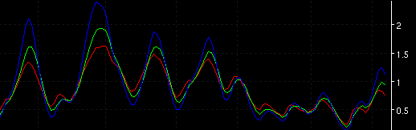

| Syntax |
LMS(Fast K Period, Slow K
Period, Select Mode, Show 2 Day, Show 5 Day) |
| Function |
Select Mode is either "Counter
Trend" or "Cycle" value. Show 2 Day and Show 5 Day is a TRUE or FALSE
value. |
| Example |
LMS(5, 5, Cycle, TRUE, TRUE) |